|
|
This appendix describes the application demonstrations that are bundled with the J2ME Wireless Toolkit.
The J2ME Wireless Toolkit includes demonstration applications that highlight some of the technologies and APIs that are supported by the emulator.
The following table lists all the demonstration applications that are included in this release. The demonstrations that are new or enhanced in this release are marked with new.
The goal of these demonstrations is to give you a glimpse of the API features of the emulator and the enhancements throughout the toolkit.
Most demonstration applications are simple to run. The next section contains instructions for running most demonstrations. Demonstrations that have additional documentation are linked in the table below.
The source code for every demonstration application is available in the {toolkit}\apps directory. Subdirectories contain projects, and each project has a src directory that contains Java source code. For example, if the toolkit is installed in \WTK22, the source code for the SMS sender MIDlet (example.sms.SMSSend) in WMADemo is contained in \WTK22\apps\WMADemo\src\example\sms\SMSSend.java.
It's usually very simple to run one of the demonstration applications. This section describes the general procedure. More detailed instructions for specific demonstrations are referenced in the table above.
The first step is to run KToolbar. To do this, go to the Windows Start menu and choose Start > Programs > J2ME Wireless Toolkit 2.2 > KToolbar. The KToolbar window pops up:
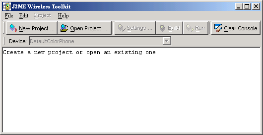
Click on the Open Project... button to open a demonstration application. You'll see a list of all the available applications.
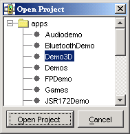
Select one and click on the Open Project button in the dialog.
Once the application is opened, all you need to do is press the Run button. The device emulator will pop up running the example application. Choose a specific demonstration to run from the menu and press the soft button for Launch.
Some demonstrations require other setup and instructions. Check the full list to see if there are specific instructions for a demonstration.
This application contains a MIDlet that demonstrate the use of JSR 82’s Bluetooth API.
Bluetooth Demo shows how images can be transferred between devices using Bluetooth. You will need to run two instances of the emulator to see how this demonstration works.
In the first emulator, choose Bluetooth Demo, then Server. The emulator will ask you if you want to allow a Bluetooth connection. Choose Yes. The server starts up and displays a list of images. At the beginning, none of the images are being made available on the Bluetooth network. To make images available, select them and choose Publish image from the menu. Images with a green icon are published, while those with a purple icon are not.
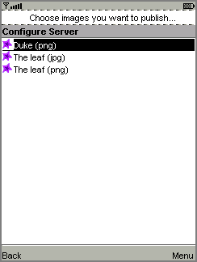
On the second emulator, choose Bluetooth Demo, then Client. The MIDlet tells you it’s ready to search for images. Choose Find. The MIDlet will find the other emulator and get a list of images from it. Select one from the list and choose Load. The emulator asks if you want to allow the connection. Choose Yes.
In the first emulator, the server, a prompt appears, asking if you want to authorize the connection from the client. Choose Yes. The image is transferred via simulated Bluetooth and shown on the client emulator.
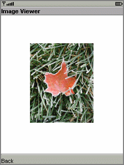
You can avoid the permission prompts by running the demonstration in the trusted protection domain.
This application contains three MIDlets that show off the emulator's support of JSR 184, the Mobile 3D Graphics API.
Life3D implements the popular Game of Life in three dimensions. Live cells are represented by cubes. Each cell has 26 possible neighbors (including diagonals). For each step of the animation, cells with fewer than 4 neighbors die of loneliness, while cells with more than 5 neighbors die of overcrowding. An empty cell with exactly 4 neighbors will become a new live cell.
The view of the playing board rotates slowly so you can view the board from all angles.
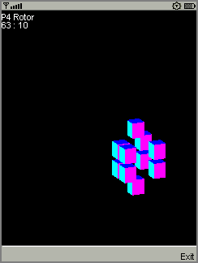
The keypad buttons provide control over the game.
This source code for this example is particularly well-documented. Take a look at {toolkit}\apps\Demo3D\src\com\superscape\m3g\wtksamples\life3d\Life3D.java.
PogoRoo shows you the rear end of a kangaroo bouncing up and down on a pogo stick.
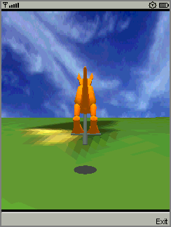
You can get the kangaroo to bounce around the landscape by using the arrow keys. Push up to go forward, down to go backward, and left and right to change direction. You might need to hold down the keys to see an effect.
The retainedmode MIDlet plays back a scene file that shows a tireless skateboarder in an endless loop.
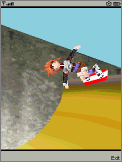
JSR172Demo shows how to access a web service from a MIDlet. The web service is already running on an Internet server. You should be able to simply build and run the example.
If you are behind a firewall, you’ll need to configure the emulator’s proxy server settings. Choose Edit > Preferences... from the KToolbar menu, then select the Network Preferences tab. Fill in the proxy server addresses and ports.
JSR172Demo contains a single MIDlet, Server Script. Launch it and follow the prompts. You can browse through simulated news headlines, all of which are retrieved from the web service.
To see what’s going on behind the scenes, use the network monitor.
The mmademo application contains four MIDlets that showcase the multimedia capabilities of the J2ME Wireless Toolkit. This section describes the MIDlets and includes additional information about using multimedia from your applications.
The Simple Tones example demonstrates how to use interactive synthetic tones. The first menu entries play tones with different pitch and duration using Manager.playTone(). Choosing the third menu item will play a chord on the interactive MIDI device (locator "device://midi"). The shortMidiEvent() method of MIDIControl is used to trigger the notes of the chord.
The Simple Player application demonstrates the range of audio and video capabilities of the emulator. It includes example files in a variety of formats and can play files from the emulator's persistent storage or from HTTP URLs.
The player portion uses a generic javax.microedition.media.Player interface. The player displays duration, media time, and controls for running the media file. If metadata is available in a file, the player enables you to view the information, such as author and title. In the case of MIDI files, if karaoke text is present in the file, it displays on the screen during play. Graphical user interface controls can be viewed on the display screen if applicable. You can access these controls by selecting one of the media samples in Simple Player, then pressing the Menu button to view and select the desired command.
The demo includes the following media samples:
Bong plays a short WAV file. You can adjust certain playback features, as described later in this document. The display shows the duration of the sound in minutes:seconds:tenths of a second, for example 00:17:5. This audio sample is a resource file in the MIDlet suite JAR file.MIDI Scale plays an example musical scale. The display shows the title of the selected music file, the duration of the song, the elapsed time during playback, and the current tempo in beats per minute (bpm). This MIDI file is stored in the MIDlet suite JAR file.Simple Ring Tone plays a short sequence of Beethoven's Fifth Symphony. The display shows the title of the selected music file, the duration of the song, the elapsed time in seconds and tenths of a second during playback, and the current tempo in beats per minute (bpm). This ringtone file (.jts format) is stored in the MIDlet suite JAR file.WAV Music plays a brief audio file. The display shows the title of the audio file, the duration of the audio the elapsed time during playback, and the playback rate in percent. This WAV file is retrieved from an HTTP server.MIDI Scale plays a MIDI file that is retrieved from an HTTP server.Animated GIF example shows an animated GIF that counts from 1 to 5. The file is stored in the MIDlet suite JAR.Audio Capture from a default device lets you capture audio from the microphone or connected device. The sound is captured and played back on the speaker. To avoid feedback, use a headset.Video Capture Simulation simulates viewing input video such as might be possible on a device equipped with a camera.[enter URL] allows you to play back media files from arbitrary HTTP servers. Type a valid URL at the insertion point and click OK to play a file. If you want to open an HTTP directory from which to select media, be sure to add a slash to the end of the URL.In addition, Simple Player parses ring tones in Ringing Tones text transfer language (RTTTL). See http://www.convertyourtone.com/rtttl.html for information on RTTTL.
A key feature of Simple Player is a common set of commands that control media playback. The commands are available from the Simple Player menu, and some have associated keypad buttons. The following table describes these commands.
The commands may or may not be available depending on the media type that Simple Player is playing. In addition, some commands can be invoked using the keypad buttons. The following table describes the availability of commands, their keypad equivalents, and the relevant class from MMAPI.
Note that a short list of commands and the corresponding keypad buttons is available in the Simple Player application itself. Just choose the Quick Help command from the menu.
This MIDlet exists to demonstrate how the J2ME Wireless Toolkit will warn you if a paused MIDlet has not stopped its running Players. After you launch the MIDlet, choose the Play command to start playing some audio. The screen displays a status, which is either “Well-behaved” or “Not Well-Behaved.”
Pause the MIDlet by choosing MIDlet > Pause from the emulator window’s menu. As expected, the MIDlet is paused and no message is displayed on the KToolbar console. Restart the MIDlet by choosing MIDlet > Resume from the emulator window’s menu.
Now choose the Misbehave command. Pause the MIDlet again. In the KToolbar console, you will receive a short lecture about how well-behaved MIDlets release resources when they are paused.
The Video application illustrates how the emulator is capable of playing animated GIF files and capturing video. On a real device with a camera, video capture can be used to show the user what the camera sees.
Animated GIFs and video capture can be implemented using either a Form Item or a Canvas. The Video demonstration includes all the possibilities:
Animated GIF - Form [jar] shows an animated GIF as a Form Item. The form also includes some information about the playback, including the current time. Choose the Snapshot command to take a snapshot of the running animation. The snapshot will be placed in the form following the animated GIF.Animated GIF - Canvas [jar] shows an animated GIF in a Canvas. A simple indicator shows the progress through the animation. Choose Snapshot to get a still image of the current appearance. The snapshot is shown briefly, then the display goes back to the animation.Video Capture - Form simulates capturing video from a camera or other source and showing it as an Item in a Form. Choose the Snapshot command to take a snapshot of the captured video. The snapshot will be placed in the form following the video capture.Video Capture - Canvas simulates capturing video from a camera or other source and showing it in a Canvas. Choose Snapshot to get a still image of the current appearance. The snapshot is shown briefly, then the display goes back to the video capture.The mmademo applications have the following attributes that you can modify in the User Defined tab of the project settings dialog box:
This application shows how to transfer image files between emulator instances using the OBEX API. This demonstration shows the use of OBEX over a simulated infrared connection.
Run two instances of the emulator. One listens for incoming connections, while the other attempts to send an image. In the first emulator, choose Obex Demo, then Receive Image. The emulator will ask for permission to listen. Choose Yes. The emulator will display a screen that indicates it’s waiting for incoming connections.
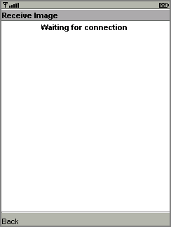
In the second emulator, launch Obex Demo, then choose Send Image. You’ll see a list of images. Select one and choose Send. The emulator will ask for permission to make the outgoing connection. Choose Yes.
Back in the first (listening) emulator, you’ll see a prompt asking whether you want to accept the incoming connection.
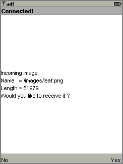
Choose Yes. The image you selected is transferred over the simulated infrared link and displayed on the first emulator.
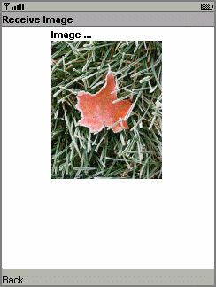
PDAPDemo shows how to use the PIM and FileConnection APIs that are part of the JSR 75 specification.
To run the file browser, you’ll need to give the MIDlet appopriate security authorization. The easiest way to do this is to choose Edit > Preferences... from the KToolbar menu. Click on the Security tab. Change the Security domain to trusted and press OK.
Now open and run the PDAPDemo project. Launch the FileBrowser MIDlet. You will see a directory listing. You can browse through the available directories and files. By default there is one directory, root1.
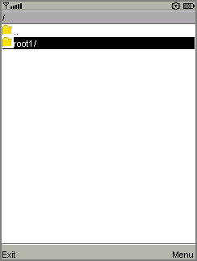
Select a directory and press the select button to enter it. The root1 directory contains a single file, Readme.
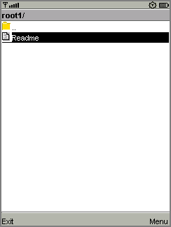
Using the commands in the demonstration, you can view the file or see its properties. Try selecting the file and choosing Properties or View from the menu.
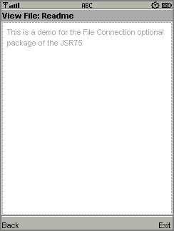
The actual files are located in {toolkit}\appdb\DefaultColorPhone\filesystem, assuming you are using the DefaultColorPhone emulator skin. You can add files and root directories as you wish and they will be visible to the JSR 75 File API. See Chapter 10 for more information.
The JSR75 PIM APIs example demonstrates how to access personal information, like contact lists, calendars, and to-do lists. After you launch the example, choose a type of list from the main menu.
In this example application, each type of list works the same way and each list type contains a single list. For example, if you choose Contact Lists, there is a single contact list called Contacts. Event Lists contains a single list called Events, and To-Do Lists conatains a single list called To do.
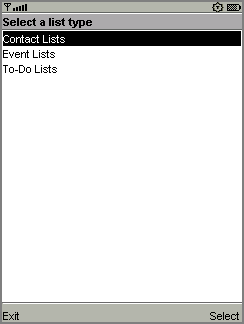
Once you've selected a list type and chosen the specific list, you'll see all the items in the list. If this is the first time you've run the example, the list is probably empty.
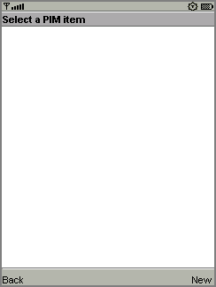
To add an item, choose New from the menu. The application prompts you for a Formatted Name for the item. You can add more data fields to this item using Add Field in the menu. You'll see a list of field names. Pick one, then enter the value for the new field.
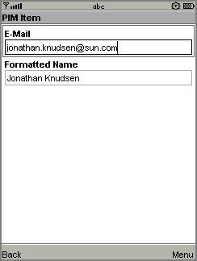
To actually save the list item, choose Commit from the menu.
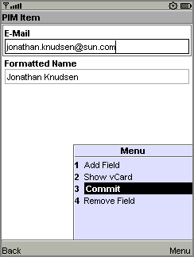
You can return to the list by choosing the Back command. You'll see the item you just created in the list.
The items that you create are stored in standard vCard or vCalendar format in the {toolkit}\appdb\{skin}\pim directory. See Chapter 10 for more information.
The PIM API allows for exporting contact, calender, and to-do items in a standard format. The exact format depends on the list type. When you are viewing an item in any list, the menu contains a command for viewing the exported item.
For example, when you are viewing a contact list item, the menu contains Show vCard. When you choose this command, the exported item is shown on the screen. Calendar items and to-do items both get exported as vCalendar.
This application shows how to send and receive SMS, CBS, and MMS messages. The J2ME Wireless Toolkit offers a flexible emulation environment to support messaging. Messages can be exchanged between emulator instances and can be generated or received using the WMA console utility.
Because this example makes use of the push registry, you can't see all of its features just by using the Run button. You need to use the Run via OTA feature to install the application into the emulator in a process that mirrors how applications are installed on real devices. If you don’t know how to do this, read about it in Chapter 2, “Developing MIDlet Suites.”
To see the magic of the push registry, use the WMA console to send the emulator a message. Launch the console by choosing File > Utilities... from the KToolbar menu. Click on the Open Console button in the WMA box to launch the WMA console.
Click on the Send SMS... button in the WMA console window. Choose the number that corresponds to the emulator, probably +5550000. If you're not sure what number the emulator is using, look in its title bar. Choose the number in the SMS message window, then fill in a port number of 50000. Then type in your text message and click on Send.
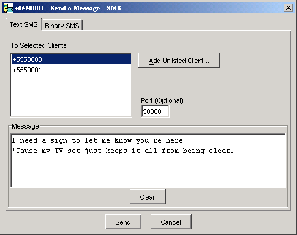
The emulator will spring to life. First it politely asks if it can launch the WMADemo application.
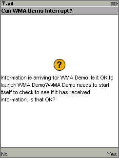
Choose Yes. The SMSReceive MIDlet is launched and immediately displays the incoming SMS message.
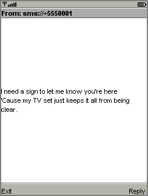
You can also use the WMA console to send and receive CBS and MMS messages. See Chapter 7, “Using the Wireless Messaging API,” for more information.
If you are attempting to send text messages to WMADemo using the WMA console, make sure to specify the port number as 50000. Use port 50001 for CBS messages. For MMS messages, use example.mms.MMSDemo as the application ID.
For example, to send an MMS message from the WMA console to the emulator, make sure that WMADemo has been installed using Run via OTA as described above. Leave the emulator running.
In the WMA console, click on Send MMS... to pop up the MMS composition window. Fill in a message subject, the application ID example.mms.MMSDemo, and the telephone number of the running emulator.
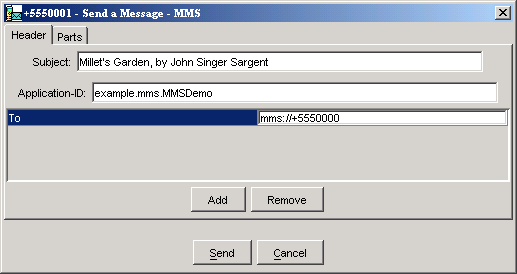
Next, click on the Parts tab. The WMA console allows you to select files from your hard disk that you wish to send as parts of the MMS message. Click Add to add a file to the message. Use the file browser to find the file you want to send and click OK.
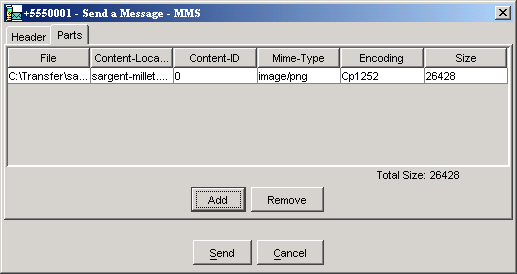
Click on Send to send the message.
The emulator asks if it can launch WMADemo. Click on Yes. The image and its information are displayed.
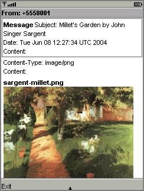
|
|
J2ME Wireless Toolkit User's Guide J2ME Wireless Toolkit 2.2 |
Copyright © 2004 Sun Microsystems, Inc. All rights reserved. Use is subject to the license terms.